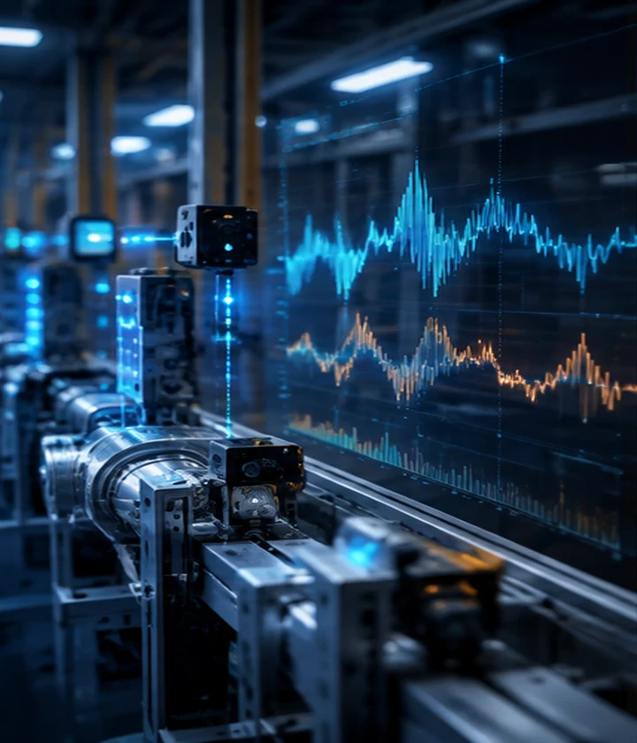

01 / AI CORE
Time-Series Forecasting & Analytics
시계열 데이터의 장단기 의존성, 추세와 주기, 변수 간 상호작용을 모델링해 미래를 예측하고 상태 변화를 분석합니다. 순환 신경망, attention 기반 구조, 시간 분해와 예측 표현학습을 연구합니다.
Time-series forecasting · Sequence modeling · Temporal dependencies
시계열 예측 · 장단기 의존성 · 추세·주기 모델링
CRU · DLFormer · FEATHer · Hybrid Temporal Autoencoder
Related publicationsCorrelation Recurrent Units: A Novel Neural Architecture for Improving the Predictive Performance of Time Series DataDistributed Lag Transformer based on Time-Variable-Aware Learning for Explainable Multivariate Time Series ForecastingFEATHer: Fourier-Efficient Adaptive Temporal Hierarchy Forecaster for Time-Series ForecastingHybrid Temporal Auto Encoder and Similarity Matching for Low Aggregation Level Long Time-Series Forecasting